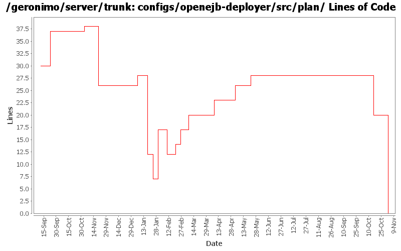

[root]/configs/openejb-deployer/src/plan

| Author | Changes | Lines of Code | Lines per Change |
|---|---|---|---|
| Totals | 25 (100.0%) | 113 (100.0%) | 4.5 |
| djencks | 10 (40.0%) | 49 (43.4%) | 4.9 |
| dain | 4 (16.0%) | 16 (14.2%) | 4.0 |
| gawor | 2 (8.0%) | 12 (10.6%) | 6.0 |
| sppatel | 1 (4.0%) | 10 (8.8%) | 10.0 |
| dims | 2 (8.0%) | 8 (7.1%) | 4.0 |
| jlaskowski | 1 (4.0%) | 6 (5.3%) | 6.0 |
| rickmcguire | 2 (8.0%) | 5 (4.4%) | 2.5 |
| akulshreshtha | 1 (4.0%) | 4 (3.5%) | 4.0 |
| dblevins | 1 (4.0%) | 3 (2.7%) | 3.0 |
| prasad | 1 (4.0%) | 0 (0.0%) | 0.0 |
GERONIMO-3565. Configs distributed amongst framework/configs and plugins
0 lines of code changed in 1 file:
reduce dependencies on geronimo-openejb.jar
8 lines of code changed in 1 file:
GERONIMO-3179 default jta and non jta datasources for generated cmp persistence units
2 lines of code changed in 1 file:
GERONIMO-3131 GERONIMO-3132 GERONIMO-3133 GERONIMO-3134 Defaults for persistence units. Supply locations of jars with persistent classes to the PersistenceUnitInfo. Match a ref with not persistence unit specified to a unique match. Allow wars to have jndi references pointing to the war module, not just the ear
15 lines of code changed in 1 file:
hook-in axis1 module builder (for jaxrpc ejb support)
4 lines of code changed in 1 file:
GERONIMO-3027 OpenEjbCorbaRefBuilder is not processing css-links at all.
2 lines of code changed in 1 file:
GERONIMO-2936 Complete hookup of CORBA TSS-link elements.
3 lines of code changed in 1 file:
Fix for GERONIMO-2876 - Initial web service EJB support for Axis2
3 lines of code changed in 1 file:
GERONIMO-2849 - service-ref app client test
GERONIMO-2850 - CXF: initial web service support for EJBs
5 lines of code changed in 1 file:
Ported Axis1 integration
3 lines of code changed in 1 file:
add geronimo-openejb to default env for refbuilders to provide visibility to ClientEjbReference
10 lines of code changed in 1 file:
Flattened hierarch of ejb-ref builder
2 lines of code changed in 1 file:
renamed ejb-ref builders
2 lines of code changed in 1 file:
@EJB annotations now work in web modules
0 lines of code changed in 1 file:
Initial openejb3 integration
12 lines of code changed in 1 file:
GERONIMO-2686 missed the configs changes in previous commit
2 lines of code changed in 1 file:
GERONIMO-2460, GERONIMO-2580 move some builders into better modules
0 lines of code changed in 1 file:
GERONIMO-2537 All Geronimo source files must be brought in line with the new ASF source header and copyright notice policy
The rest of Geronimo sources migrated
6 lines of code changed in 1 file:
GERONIMO-2499, OPENEJB-280. Generalize NamingBuilder slightly, use new corba runtime and deploy time configs. I don't think all the builders are fully wired up yet
12 lines of code changed in 1 file:
GERONIMO-2486 Added a property geronimoSchemaVersion to the namespaces in all the plans
4 lines of code changed in 1 file:
GERONIMO-2479 fix connect-to-host
1 lines of code changed in 1 file:
GERONIMO-2441 change to use new org.apache.openejb package and groupId
9 lines of code changed in 1 file:
GERONIMO-2427. Make ref builders accept either j2ee 1.4 or jee5 deployment descriptor xml
8 lines of code changed in 1 file:
GERONIMO-2383 Refactor naming builder to a set of registered builders
0 lines of code changed in 2 files: